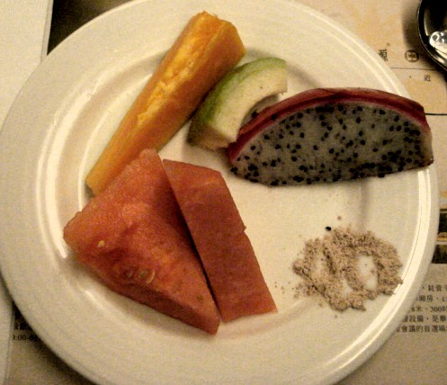

If we start with the familiar watermelon and then move clockwise, there is papaya, guava, dragon fruit, and plum powder for dipping.
| Breakfast Fruit | BACK TO DATE PAGE | |||||||
|  | ||||||||
| I don't want you to think that I eat healthy breakfasts because I usually don't eat any breakfast at all. But in Taiwan last week, while staying at a nice tourist hotel, I pigged out on bacon, ham, and even french toast with maple syrup. I had a little room left for fruit, and here's what I chose on this particular morning. If we start with the familiar watermelon and then move clockwise, there is papaya, guava, dragon fruit, and plum powder for dipping. |
||||||||
| BACK TO DATE PAGE | ||||||||